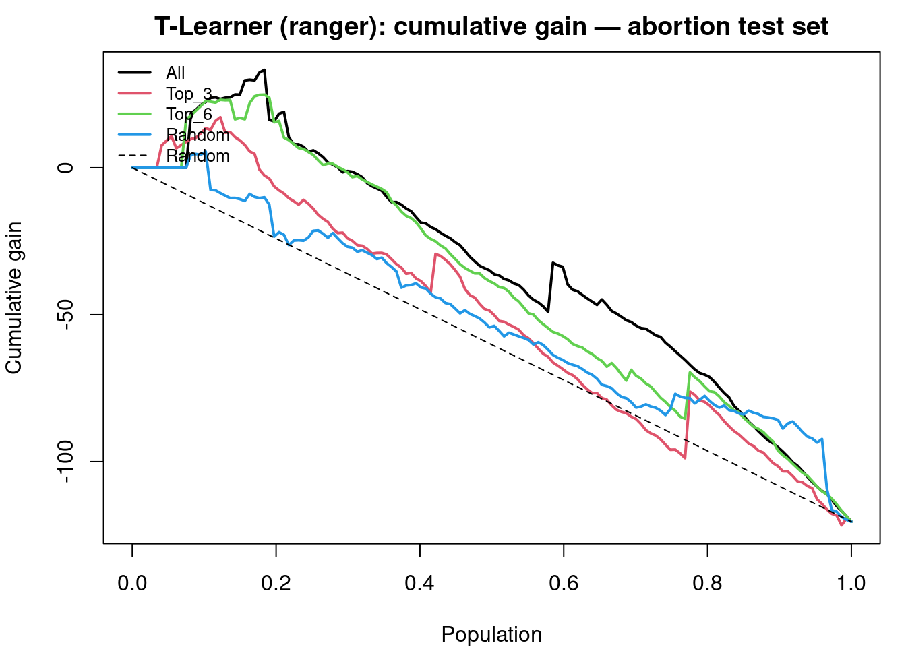
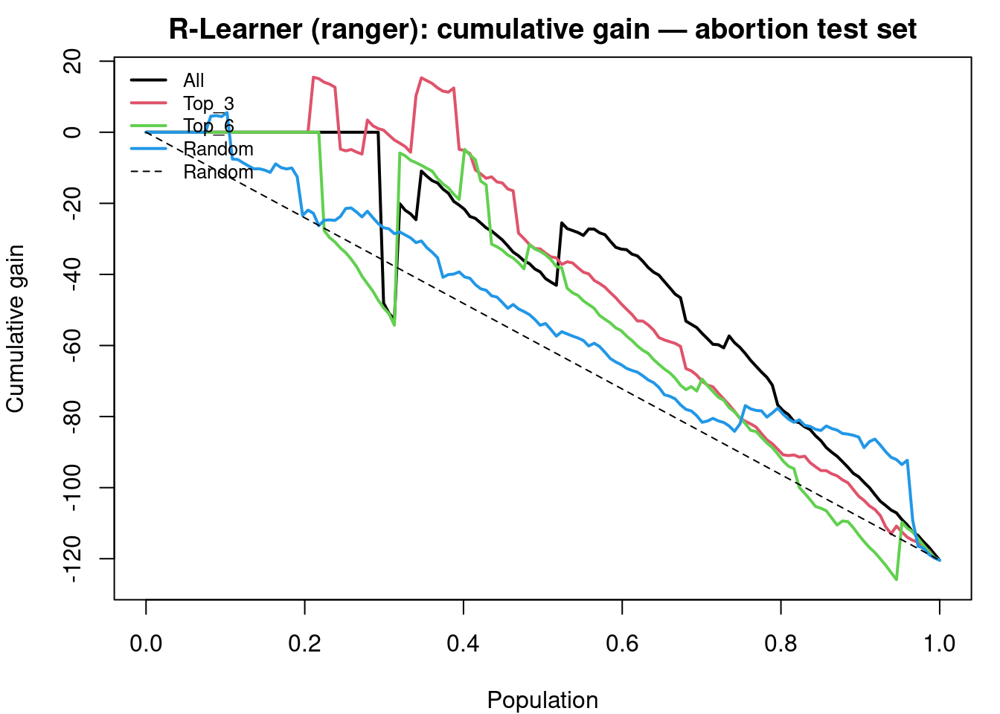
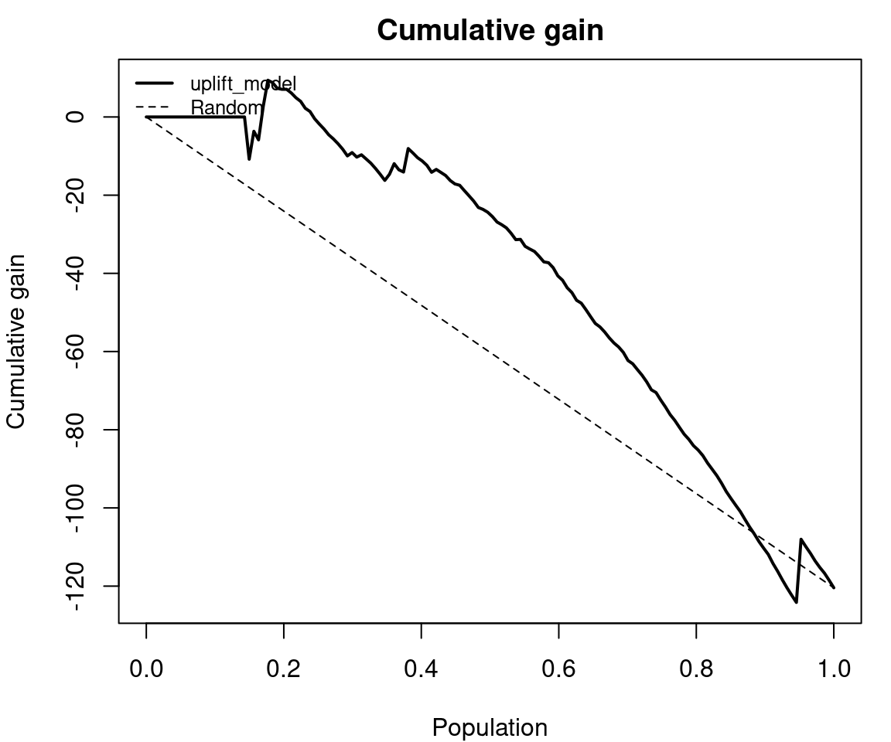
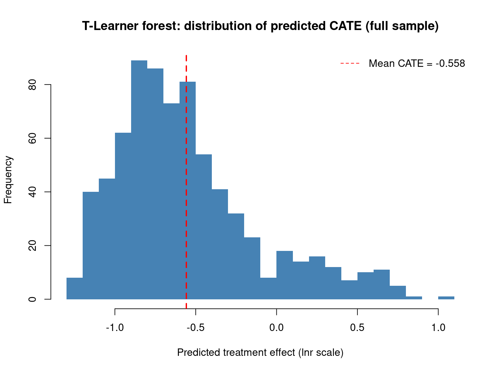
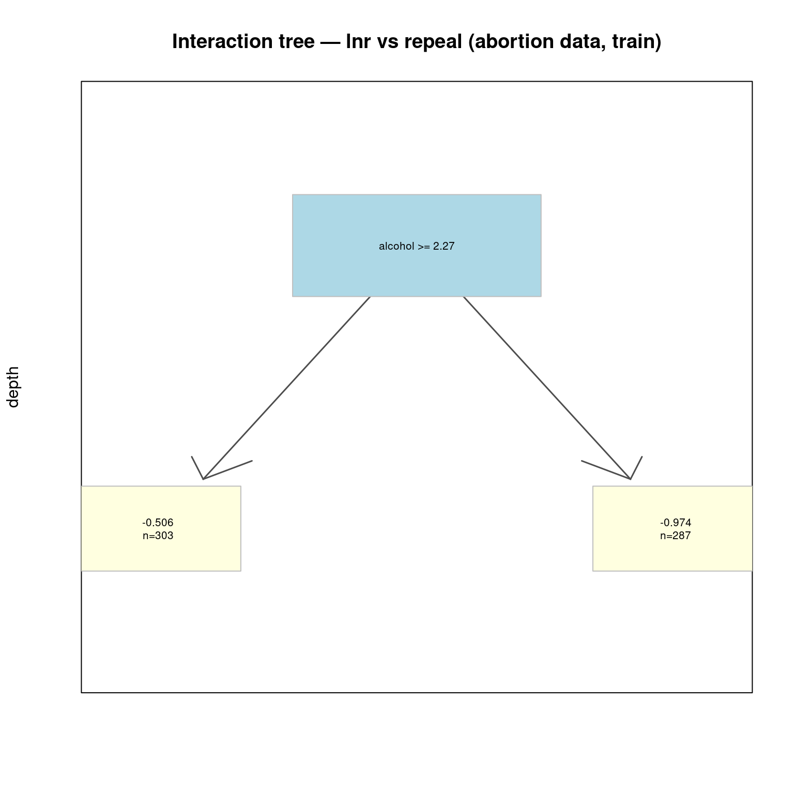

Code
packages <- c(
"tidyverse",
"RCausalML",
"causaldata",
"rpart.plot",
"shapviz",
"kernelshap"
)

This tutorial applies uplift random forest regression from RCausalML to the abortion dataset from causaldata. The dataset features a continuous outcome (logged gonorrhea rate, lnr) and a binary treatment (early repeal of abortion prohibition, repeal). We will cover:
uplift_randomForestRegressor()
A standard predictive model asks: “What outcome do we expect for this unit?”
An uplift model asks a different question:
“How much would the outcome change because of the treatment for this unit, given their covariates?”
That quantity is the Conditional Average Treatment Effect (CATE). For a unit with covariates \(X = x\) and a continuous outcome \(Y\):
\[\tau(x) = \mathbb{E}[Y \mid T = 1, X = x] - \mathbb{E}[Y \mid T = 0, X = x]\]
where \(T = 1\) is treated and \(T = 0\) is control. Heterogeneity means \(\tau(x)\) varies with \(x\): some subgroups benefit strongly, others barely, and some may be harmed.
For binary outcomes (e.g. conversion yes/no), the CATE is:
\[\tau(x) = P(Y = 1 \mid T = 1, X = x) - P(Y = 1 \mid T = 0, X = x)\]
A single uplift tree partitions covariate space into regions and assigns each a local treatment-effect estimate. This is interpretable, but unstable — small changes in data can produce very different splits.
An uplift random forest improves stability by bagging (bootstrap aggregating) many trees:
n_estimators in RCausalML).\[\hat{\tau}(x) = \frac{1}{B} \sum_{b=1}^{B} \hat{\tau}_b(x)\]
Averaging reduces variance and produces more reliable ranking of units by uplift than a single tree — the same motivation as standard random forests, but every tree is built to separate treatment effect heterogeneity, not just outcome levels.
Each node holds treated and control units. The algorithm finds the split that maximises divergence between treatment and control response distributions in the child nodes:
\[\text{gain} = \frac{n_\ell}{n}\, D(p^\ell, q^\ell) + \frac{n_r}{n}\, D(p^r, q^r) - D(p, q)\]
where \(p = P(Y=1 \mid T=1)\), \(q = P(Y=1 \mid T=0)\) in the parent, and \(D(\cdot,\cdot)\) is a divergence measure (KL, Euclidean, Chi-square, etc.). Contextual Treatment Selection (CTS) extends this to multi-arm settings.
RCausalML supports two forest styles for continuous outcomes:
RCausalML argument ||||*| | T-Learner forest | Separate outcome forests for \(T=0\) and \(T=1\); CATE = difference of predicted means | evaluation_function = "TLearner" | | Interaction / CIT forest** | Bag trees whose splits maximise treatment–covariate interaction (\(\bar{Y}^{(1)} - \bar{Y}^{(0)}\) across leaves) | evaluation_function = "IT" or "CIT" |
The forest output is \(\hat{\tau}(x)\) on the scale of \(Y\). In this notebook, \(Y\) is lnr (log gonorrhea rate per 100,000), so a CATE of \(-0.12\) means the model estimates that early repeal is associated with a 0.12 log-point lower gonorrhea rate for that covariate profile — not that the raw rate drops by 12%.
The average treatment effect (ATE) summarises the treatment in one number. An uplift forest estimates the full profile \(\tau(x)\), enabling:
|||*| | High positive \(\tau(x)\) | Large expected benefit from treatment | Priority targets | | Near zero | Treatment adds little | Skip / low priority | | Negative** \(\tau(x)\) | Treatment may worsen outcomes | Actively avoid treating |
Standard outcome prediction ranks high-baseline units highly even when treatment adds nothing. Uplift forests rank by incremental effect, directly supporting personalized treatment rules.
RCausalML fits one forest per non-control arm, returning a vector of uplifts and a recommended arm. See 03-uplift-trees-regression-r.qmd for that pattern.The abortion dataset has a single policy indicator (repeal), so this notebook uses the binary path throughout.
Following R packages are required to run this notebook. If any of these packages are not installed, you can install them using the code below:
tidyverse, RCausalML, causaldata, rpart.plot, shapviz, kernelshap
packages <- c(
"tidyverse",
"RCausalML",
"causaldata",
"rpart.plot",
"shapviz",
"kernelshap"
)# Install missing packages
# new_packages <- packages[!(packages %in% installed.packages()[, "Package"])]
# if (length(new_packages)) install.packages(new_packages)# Load packages with suppressed messages
invisible(lapply(packages, function(pkg) {
suppressPackageStartupMessages(library(pkg, character.only = TRUE))
}))# Check loaded packages
cat("Successfully loaded packages:\n")Successfully loaded packages: [1] "package:kernelshap" "package:shapviz" "package:rpart.plot"
[4] "package:rpart" "package:causaldata" "package:RCausalML"
[7] "package:lubridate" "package:forcats" "package:stringr"
[10] "package:dplyr" "package:purrr" "package:readr"
[13] "package:tidyr" "package:tibble" "package:ggplot2"
[16] "package:tidyverse" "package:stats" "package:graphics"
[19] "package:grDevices" "package:utils" "package:datasets"
[22] "package:methods" "package:base" The causaldata package provides curated datasets for causal inference. We load the abortion dataset, which records state-year observations on gonorrhea rates among 15–19 year-olds, alongside a binary indicator for early repeal of abortion prohibition. The dataset is commonly used to study how abortion legalisation policies affected risky sexual behaviour among teenagers, proxied by gonorrhea incidence.
Key variables:
| Variable | Description |
|---|---|
fip |
State FIPS code |
age |
Age in years (focus: 15–19) |
race |
Race (1 = white, 2 = black) |
sex |
Sex (1 = male, 2 = female) |
year |
Calendar year |
t |
Rescaled time variable |
totpop |
Total population (state-level) |
ir |
Incarcerated males per 100,000 |
crack |
Crack cocaine index |
alcohol |
Alcohol consumption per capita |
income |
Real income per capita |
ur |
State unemployment rate |
poverty |
Poverty rate |
repeal |
Treatment: 1 = early repeal of abortion prohibition, 0 = otherwise |
lnr |
Outcome: log gonorrhea rate per 100,000 (15–19 year-olds) |
pi |
Parental involvement law in effect |
bf15 |
Indicator: black female aged 15–19 |
Causal note: This is observational panel data. Uplift models estimate conditional contrasts \(\hat{\tau}(x)\), not causal effects per se. Causal interpretation depends on your identification assumptions (e.g. fixed effects, difference-in-differences).
list_causaldata_datasets()abortion <- load_causaldata("abortion")$data
head(abortion)str(abortion)tibble [737 × 22] (S3: tbl_df/tbl/data.frame)
$ fip : num [1:737] 1 1 1 1 1 1 1 1 1 1 ...
..- attr(*, "label")= chr "FIPSCODE"
..- attr(*, "format.stata")= chr "%8.0g"
$ age : num [1:737] 15 15 15 15 15 15 15 15 15 15 ...
..- attr(*, "label")= chr "AGE"
..- attr(*, "format.stata")= chr "%9.0g"
$ race : num [1:737] 2 2 2 2 2 2 2 2 2 2 ...
..- attr(*, "label")= chr "w-1, b-2"
..- attr(*, "format.stata")= chr "%9.0g"
$ year : num [1:737] 1985 1986 1987 1988 1989 ...
..- attr(*, "label")= chr "YEAR"
..- attr(*, "format.stata")= chr "%8.0g"
$ sex : num [1:737] 2 2 2 2 2 2 2 2 2 2 ...
..- attr(*, "label")= chr "m-1, f-2"
..- attr(*, "format.stata")= chr "%9.0g"
$ totpop : num [1:737] 106187 106831 106496 105238 102956 ...
..- attr(*, "label")= chr "TOTPOP"
..- attr(*, "format.stata")= chr "%12.0g"
$ ir : num [1:737] 101 112 123 134 146 ...
..- attr(*, "label")= chr "Incarcerated Males per 100,000"
..- attr(*, "format.stata")= chr "%9.0g"
$ crack : num [1:737] 0.217 0.277 0.211 0.56 0.722 ...
..- attr(*, "label")= chr "Crack index"
..- attr(*, "format.stata")= chr "%9.0g"
$ alcohol: num [1:737] 1.9 1.9 1.89 1.89 1.87 ...
..- attr(*, "label")= chr "Alcohol consumption per capita"
..- attr(*, "format.stata")= chr "%9.0g"
$ income : num [1:737] 11566 12164 12826 13698 14865 ...
..- attr(*, "label")= chr "Real income per capita"
..- attr(*, "format.stata")= chr "%9.0g"
$ ur : num [1:737] 8.62 9.08 7.65 6.92 6.62 ...
..- attr(*, "label")= chr "State unemployment rate"
..- attr(*, "format.stata")= chr "%9.0g"
$ poverty: num [1:737] 20.6 23.8 21.3 19.3 18.9 ...
..- attr(*, "label")= chr "Poverty rate"
..- attr(*, "format.stata")= chr "%9.0g"
$ repeal : num [1:737] 0 0 0 0 0 0 0 0 0 0 ...
..- attr(*, "format.stata")= chr "%9.0g"
$ acc : num [1:737] 0.68 1.53 3.5 6.26 9.42 ...
..- attr(*, "label")= chr "AIDS mortality per 100,000 cumulative in t, t-1, t-2, t-3"
..- attr(*, "format.stata")= chr "%9.0g"
$ wht : num [1:737] 0 0 0 0 0 0 0 0 0 0 ...
..- attr(*, "label")= chr "White Indicator"
..- attr(*, "format.stata")= chr "%9.0g"
$ male : num [1:737] 0 0 0 0 0 0 0 0 0 0 ...
..- attr(*, "label")= chr "Male Indicator"
..- attr(*, "format.stata")= chr "%9.0g"
$ lnr : num [1:737] 8.78 8.76 8.66 8.72 8.69 ...
..- attr(*, "format.stata")= chr "%9.0g"
$ t : num [1:737] 1 2 3 4 5 6 7 8 9 10 ...
..- attr(*, "format.stata")= chr "%9.0g"
$ younger: num [1:737] 1 1 1 1 1 1 1 1 1 1 ...
..- attr(*, "format.stata")= chr "%9.0g"
$ fa : num [1:737] 1 1 1 1 1 1 1 1 1 1 ...
..- attr(*, "format.stata")= chr "%9.0g"
$ pi : num [1:737] 0 0 1 1 1 1 1 1 1 1 ...
..- attr(*, "format.stata")= chr "%9.0g"
$ bf15 : num [1:737] 1 1 1 1 1 1 1 1 1 1 ...
..- attr(*, "format.stata")= chr "%9.0g"summary(abortion$repeal) # Treatment balance Min. 1st Qu. Median Mean 3rd Qu. Max.
0.0000 0.0000 0.0000 0.1085 0.0000 1.0000 table(abortion$repeal, abortion$race) # Example crosstab
2
0 657
1 80We restrict to the 15–19 age group and drop rows with any missing values, then define covariate matrix \(X\), outcome \(Y\), and treatment \(W\).
abortion_clean <- abortion |>
dplyr::filter(age >= 15 & age <= 19) |>
na.omit()
# Define X, Y, W
X <- abortion_clean[, c("age", "race", "sex", "totpop", "ir", "crack",
"alcohol", "income", "ur", "poverty")]
Y <- abortion_clean$lnr # Continuous outcome: log gonorrhea rate
W <- abortion_clean$repeal # Binary treatment: 1 = early repeal
# Convert X to numeric matrix and drop near-zero variance columns
X <- as.matrix(X)
X <- X[, apply(X, 2, stats::var) > 1e-10, drop = FALSE]
cat("Covariates used:", colnames(X), "\n")Covariates used: totpop ir crack alcohol income ur poverty We use an 80 / 20 random split (seed fixed for reproducibility).
set.seed(111)
n <- nrow(abortion_clean)
train_idx <- sample(seq_len(n), size = round(0.8 * n))
X_train <- X[train_idx, , drop = FALSE]
Y_train <- Y[train_idx]
W_train <- W[train_idx]
X_test <- X[-train_idx, , drop = FALSE]
Y_test <- Y[-train_idx]
W_test <- W[-train_idx]
x_names <- colnames(X_train)
cat("Training rows:", nrow(X_train), "\n")Training rows: 590 Test rows: 147 cat("Columns: ", x_names, "\n")Columns: totpop ir crack alcohol income ur poverty Outcome by treatment arm:
agg <- aggregate(
lnr ~ repeal,
data = data.frame(lnr = Y, repeal = W),
FUN = function(z) c(mean = mean(z), sd = stats::sd(z), size = length(z))
)
agg <- do.call(data.frame, agg)
names(agg) <- c("repeal", "mean", "sd", "size")
agg <- rbind(agg, data.frame(repeal = "All", mean = mean(Y),
sd = stats::sd(Y), size = length(Y)))
print(agg) repeal mean sd size
1 0 8.120686 0.7148369 657
2 1 7.441832 0.7456931 80
3 All 8.046997 0.7481906 737Following Zhao et al. (2020), we use the F-filter (get_importance(..., method = "F")) to rank covariates by their treatment–feature interaction strength, measured via F-tests in linear models. This is the appropriate filter for continuous outcomes like lnr.
Why not
LRorKL? Those filters inRCausalMLare implemented for binary outcomes only. For continuous outcomes, usemethod = "F".Training-only rule: feature ranking uses the training set only to avoid data leakage into model evaluation.
df_fs_train <- as.data.frame(X_train, stringsAsFactors = FALSE)
names(df_fs_train) <- x_names
df_fs_train$lnr <- Y_train
df_fs_train$treatment_group_key <- ifelse(W_train == 1, "treated", "control")f_imp_1 <- get_importance(
df_fs_train,
features = x_names,
y_name = "lnr",
method = "F",
experiment_group_column = "treatment_group_key",
control_group = "control",
treatment_group = "treated",
order = 1
)
f_imp_2 <- get_importance(
df_fs_train,
features = x_names,
y_name = "lnr",
method = "F",
experiment_group_column = "treatment_group_key",
control_group = "control",
treatment_group = "treated",
order = 2
)
f_imp_3 <- get_importance(
df_fs_train,
features = x_names,
y_name = "lnr",
method = "F",
experiment_group_column = "treatment_group_key",
control_group = "control",
treatment_group = "treated",
order = 3
)
cat("*** Order 1 ***\n"); head(f_imp_1)*** Order 1 ****** Order 2 ****** Order 3 ***Top 3 (F1): ir, totpop, income Top 6 (F1): ir, totpop, income, alcohol, crack, poverty We compare cumulative gain and AUUC (area under the uplift curve, normalised) on the test set for T-, R-, and S-learners fitted on all features, the top-6 subset, and the top-3 subset.
is_treated <- as.integer(W_test)
y_test <- Y_test
n_test <- nrow(X_test)
model_cols <- c("All", "Top_3", "Top_6", "Random")fit_tl <- function(feats) {
m <- TLearner(learner = "ranger", control_name = 0)
m <- fit(m, X_train[, feats, drop = FALSE], W_train, Y_train)
p <- predict(m, X_test[, feats, drop = FALSE])
if (is.matrix(p)) p[, 1] else p
}
pred_tl_all <- fit_tl(x_names)
pred_tl_t3 <- fit_tl(top_3_features)
pred_tl_t6 <- fit_tl(top_6_features)set.seed(42)
df_tl <- data.frame(
All = pred_tl_all,
Top_3 = pred_tl_t3,
Top_6 = pred_tl_t6,
Random = stats::runif(n_test),
is_treated = is_treated,
lnr = y_test
)
plot_gain(df_tl,
outcome_col = "lnr",
treatment_col = "is_treated",
model_cols = model_cols,
main = "T-Learner (ranger): cumulative gain — abortion test set")
All Top_3 Top_6 Random
-0.2828 -0.4161 -0.3262 -0.4225 fit_rl <- function(feats) {
m <- RLearner(learner = "ranger", control_name = 0, n_fold = 3)
m <- fit(m, X_train[, feats, drop = FALSE], W_train, Y_train)
p <- predict(m, X_test[, feats, drop = FALSE])
if (is.matrix(p)) p[, 1] else p
}
pred_rl_all <- fit_rl(x_names)
pred_rl_t3 <- fit_rl(top_3_features)
pred_rl_t6 <- fit_rl(top_6_features)set.seed(42)
df_rl <- data.frame(
All = pred_rl_all,
Top_3 = pred_rl_t3,
Top_6 = pred_rl_t6,
Random = stats::runif(n_test),
is_treated = is_treated,
lnr = y_test
)
plot_gain(df_rl,
outcome_col = "lnr",
treatment_col = "is_treated",
model_cols = model_cols,
main = "R-Learner (ranger): cumulative gain — abortion test set")
All Top_3 Top_6 Random
-0.3249 -0.3289 -0.4059 -0.4225 fit_sl <- function(feats) {
m <- SLearner(learner = "ranger", control_name = 0)
m <- fit(m, X_train[, feats, drop = FALSE], W_train, Y_train)
p <- predict(m, X_test[, feats, drop = FALSE])
if (is.matrix(p)) p[, 1] else p
}
pred_sl_all <- fit_sl(x_names)
pred_sl_t3 <- fit_sl(top_3_features)
pred_sl_t6 <- fit_sl(top_6_features)set.seed(42)
df_sl <- data.frame(
All = pred_sl_all,
Top_3 = pred_sl_t3,
Top_6 = pred_sl_t6,
Random = stats::runif(n_test),
is_treated = is_treated,
lnr = y_test
)
plot_gain(df_sl,
outcome_col = "lnr",
treatment_col = "is_treated",
model_cols = model_cols,
main = "S-Learner (ranger): cumulative gain — abortion test set")
All Top_3 Top_6 Random
-0.3023 -0.4753 -0.3355 -0.4225 auuc_tab <- rbind(
data.frame(Learner = "T-Learner", Feature_set = names(auuc_tl),
AUUC = as.numeric(auuc_tl)),
data.frame(Learner = "R-Learner", Feature_set = names(auuc_rl),
AUUC = as.numeric(auuc_rl)),
data.frame(Learner = "S-Learner", Feature_set = names(auuc_sl),
AUUC = as.numeric(auuc_sl))
)
knitr::kable(auuc_tab, digits = 4,
caption = "AUUC by learner and feature subset (abortion, test set)")| Learner | Feature_set | AUUC |
|---|---|---|
| T-Learner | All | -0.2828 |
| T-Learner | Top_3 | -0.4161 |
| T-Learner | Top_6 | -0.3262 |
| T-Learner | Random | -0.4225 |
| R-Learner | All | -0.3249 |
| R-Learner | Top_3 | -0.3289 |
| R-Learner | Top_6 | -0.4059 |
| R-Learner | Random | -0.4225 |
| S-Learner | All | -0.3023 |
| S-Learner | Top_3 | -0.4753 |
| S-Learner | Top_6 | -0.3355 |
| S-Learner | Random | -0.4225 |
Reading the table: Higher AUUC means better uplift ranking. Smaller feature sets can match or beat “all features” when the dropped covariates are noisy — this is the practical payoff of filter-based feature selection.
uplift_randomForestRegressor()
The workhorse for continuous outcomes in RCausalML. Choose the forest style via evaluation_function:
"TLearner" (default): two ranger forests, one per arm; CATE = difference of predicted means."IT": bagged interaction-tree forests; CATE = averaged leaf contrasts across trees."CIT": causal inference tree variant (single tree or forest).# Mirrors Python: UpliftRandomForestRegressor(n_estimators=100, max_depth=8, min_samples_leaf=80)
uplift_model <- uplift_randomForestRegressor(
X_train, W_train, Y_train,
n_estimators = 100,
min_samples_leaf = 80,
max_depth = 8,
evaluation_function = "TLearner",
random_state = 111
)
pred_tr <- predict(uplift_model, X_train)
pred_te <- predict(uplift_model, X_test)
cat("Mean predicted CATE — train:", round(mean(pred_tr), 4),
" | test:", round(mean(pred_te), 4), "\n")Mean predicted CATE — train: -0.6213 | test: -0.5756 The full_output = TRUE argument returns the control arm prediction, treatment arm prediction, and CATE (delta) for each unit — useful for auditing and downstream analysis.
evaluation_function = "IT")uplift_it_rf <- uplift_randomForestRegressor(
X_train, W_train, Y_train,
n_estimators = 50,
min_samples_leaf = 80,
max_depth = 4,
evaluation_function = "IT",
random_state = 111
)
pred_it_te <- predict(uplift_it_rf, X_test)
cat("IT forest — mean predicted CATE (test):", round(mean(pred_it_te), 4), "\n")IT forest — mean predicted CATE (test): -0.5789 Model summaries:
The cumulative gain curve plots, as we move through units in descending order of predicted CATE, how much actual treatment benefit we capture relative to random assignment. A curve bowing above the diagonal indicates useful uplift ranking.
df_gain <- data.frame(
is_treated = W_test,
outcome = Y_test,
uplift_model = pred_te
)
head(df_gain)plot_gain(df_gain, outcome_col = "outcome", treatment_col = "is_treated")
Fitting on the full dataset gives a picture of how heterogeneous the treatment effect is across all observed covariate profiles.
uf_full <- uplift_randomForestRegressor(
X, W, Y,
n_estimators = 80,
min_samples_leaf = 40,
max_depth = 8,
evaluation_function = "TLearner",
random_state = 111
)
pred_cate_full <- predict(uf_full, X)hist(
pred_cate_full,
breaks = 30,
main = "T-Learner forest: distribution of predicted CATE (full sample)",
xlab = "Predicted treatment effect (lnr scale)",
col = "steelblue",
border = NA
)
abline(v = mean(pred_cate_full), lty = 2, col = "red", lwd = 2)
legend("topright",
legend = sprintf("Mean CATE = %.3f", mean(pred_cate_full)),
lty = 2, col = "red", bty = "n")
For the T-Learner forest, we can extract ranger variable importance from each arm separately and average them to get a global covariate ranking.
Note:
uplift_forest_plot()applies to the IT forest (uplift_it_rf), not the T-Learner object, because the T-Learner stores two separaterangermodels rather than a list of uplift trees. Useuplift_forest_plot(uplift_it_rf, which_trees = 1:3)to inspect individual IT trees.
Forests are powerful but opaque. A single interaction tree or causal inference tree summarises the learned heterogeneity in human-readable split rules, useful for communicating findings to non-technical stakeholders.
it_fit <- interaction_tree(
X_train, W_train, Y_train,
min_node_size = 200,
max_depth = 4
)
# Print split rules
cat(uplift_tree_string(it_fit$tree, it_fit$X_names))alcohol >= 2.2700?
yes -> [tau=-0.5057, n=303]
no -> [tau=-0.9739, n=287]Leaf labels show \(\hat{\tau} \approx \mathbb{E}[Y \mid T=1] - \mathbb{E}[Y \mid T=0]\) within each region.
uplift_tree_plot(
it_fit,
main = "Interaction tree — lnr vs repeal (abortion data, train)"
)
cit_fit <- causal_inference_tree(
X_train, W_train, Y_train,
min_node_size = 200,
max_depth = 4
)
uplift_tree_plot(
cit_fit,
main = "Causal inference tree (CIT) — abortion data (train)"
)
SHAP (SHapley Additive exPlanations) decomposes each unit’s predicted CATE into additive contributions from each covariate. This shows why the model predicts high or low treatment benefit for a given unit.
Important: SHAP explains heterogeneity in \(\hat{\tau}(X)\), not heterogeneity in the raw outcome \(\mathbb{E}[Y \mid X]\). A positive SHAP value for a feature means that feature pushes the predicted treatment effect up.
Kernel SHAP is model-agnostic: it uses the model’s
predict()function and a reference background dataset. It can be slow for large datasets — we use a 100-row explain set and a 100-row background.
set.seed(2026)
n_explain <- min(100L, nrow(X_train))
bg_size <- min(100L, nrow(X_train))
X_explain <- X_train[seq_len(n_explain), , drop = FALSE]
bg_idx <- sample.int(nrow(X_train), bg_size)
bg_X <- X_train[bg_idx, , drop = FALSE]
pred_fun <- function(object, newdata) as.vector(predict(object, newdata))
library(future)
plan(multisession, workers = max(1L, parallel::detectCores() - 1L))
shap_ksh <- kernelshap(
object = uplift_model,
X = X_explain,
bg_X = bg_X,
pred_fun = pred_fun,
bg_w = NULL,
verbose = FALSE
)
plan(sequential)
shp_uplift <- shapviz(shap_ksh, X = X_explain)sv_importance(shp_uplift, kind = "beeswarm") # Distribution of SHAP by feature
sv_importance(shp_uplift, show_numbers = TRUE) # Bar chart with mean |SHAP|
These show how a feature’s SHAP value changes as the feature value changes — revealing the shape of the heterogeneity.

Interaction between the top two features:
if (length(x_names) >= 2) {
sv_dependence(shp_uplift, v = x_names[[2]], color_var = x_names[[1]])
}
A waterfall plot decomposes one unit’s predicted CATE into covariate contributions, starting from the baseline (mean prediction across background) and adding or subtracting each feature’s SHAP value.
This tutorial demonstrated the full workflow for uplift random forest regression with RCausalML on a real observational dataset:
||| | Data | Loaded abortion via causaldata; defined lnr (continuous), repeal (binary) | | Feature selection | F-filter (get_importance(..., method = "F")) on training data only; compared top-3 / top-6 / all features | | Learner comparison | T-, R-, S-Learners × feature subsets evaluated by AUUC on the test set | | Uplift forest | uplift_randomForestRegressor() with evaluation_function = "TLearner" and "IT" | | Evaluation | Gain curves, AUUC, CATE distribution, ranger variable importance | | Single trees | interaction_tree() and causal_inference_tree() for interpretable split rules | | SHAP | Kernel SHAP via kernelshap + shapviz — importance, dependence, waterfall |
lnr (log) scale. A CATE of \(-0.10\) means the model expects \(0.10\) fewer log-points of gonorrhea rate — not a 10% reduction in the raw rate.evaluation_function = "TLearner" for stable predictions with ranger; use "IT" or "CIT" when you want treatment-effect-aware splitting throughout the forest, or when you want to inspect individual trees with uplift_forest_plot().uplift_randomForest(..., control_name = ...) — see 03-uplift-trees-regression-r.qmd.